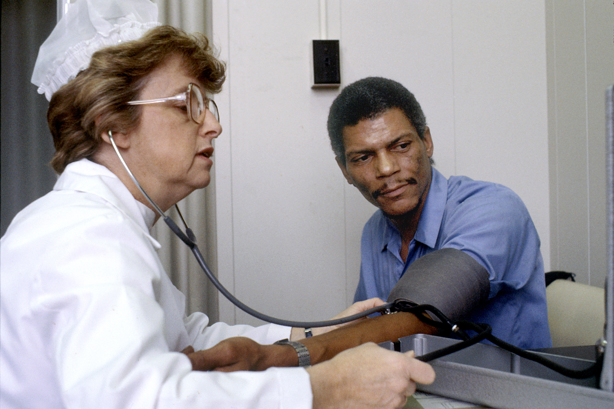
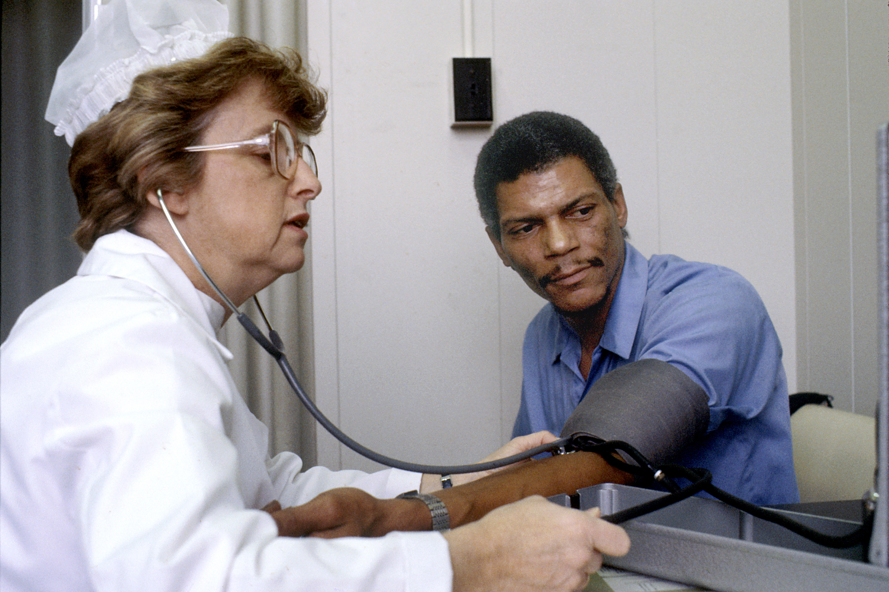

Which of the following occupations a blind person would be able to pursue?
Click on the images to check them out.
Read the Page
Teacher

Nurse
Architect
Journalist
Warehouse worker

Pilot
Which of the following occupations a blind person would be able to pursue?
Click on the images to check them out.
Teacher
Nurse
Architect
Journalist
Warehouse worker
Pilot
Congratulations! Thank you for your participation. Let's move to the next step.